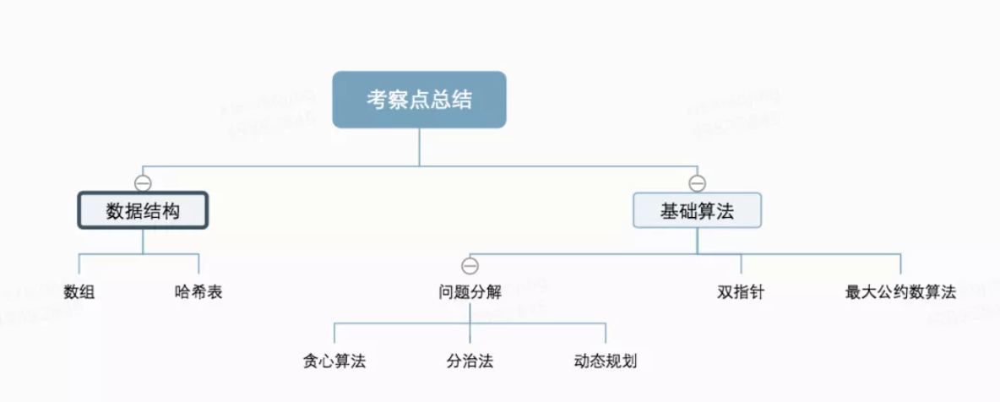
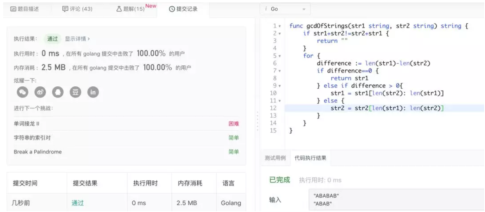

原文连接:https://www.cnblogs.com/xiexj/p/11756824.html
引子
为什么我要刷leetcode？换工作？不是！那是？玩！巴菲特的双目标清单系统，基本方法是列两个清单，一个是职业生涯最重要的目标（不超过5个），另一个是比较重要的目标。对于比较重要的目标，要像躲避瘟疫一样的去躲避它们，不投入任何的时间和精力，把这些资源花在最重要的目标上。这个双目标清单系统以方法的形式说明三件事：
1，目标很重要
2，专注很有力量
3，比起「有所为」、「有所不为」更为关键
所以当我想做一件事情，但是想不到这件事情能给我带来实在的收益时，我就定义为「玩」。就像看电影、喝奶茶一样。我只是去做这件事，在有闲暇的时候占用一些时间，并不占用精力。 我工作十二年，技术一直不好。虽然对一部分人来说还算可以，在美团工作、百余项技术发明专利、kubernetes源码贡献者。但是即使在名声每况愈下的母校同届同专业毕业生中，也算是菜的。原来我之前一直定义为没有天赋。在毕业的第一家公司，被作为技术招进来，但是因为语言学的太好做的是翻译的工作。一年过日语1级。参加任何和日语相关的比赛，只要我参加，第一名肯定是我的，没别人什么事儿。别人说这是天赋，我那时候没想过这个问题，只是不由自主的把精力都花在了这上面。而对于工作，只是完成任务。对于技术，只是用到才去学。很久之后我才说服自己：我的没有天赋只是没投入精力而已。在一件事上有多少天赋取决于在这上面成功的渴望有多强烈。所以现在，我有了一个重心：做好工作中需要的技术。其他想做的事情，就不要投入什么精力，保持专注。实际上刷leetcode对我是有好处的。
1，我不去面试，但是我有可能面试别人。别人在写算法的时候，我需要有思考才不至于用来面试别人的时间对自己没有成长。也是对面试者的负责。
2，刷leetcode，我用的是go语言。工作中暂时还没用。但是我是做容器的，迟早是要用的，提前熟悉起来。
3，算是对之前包括大学四年的一个回顾总结，将之前的一些知识体系化
以下是我刷了14道平均难度在简单级别的算法之后，做的梳理。
结果
leetcode有些测试用例不全，比如下面「最大子序和」一题中，测试用例就没包含数组中数组全为负数的情况。这个不重要。重要的是玩也要玩的有方法论指导，做个总结复盘。能做到这一点，就算自己没考上211、985，也能影响下一代，在拼娃的竞争中获得成功。
先看梳理一下整体考察点，因为刷题少，只是做出一个最小骨架。后续如果有时间再做题，直接加节点即可。算是一个MVP（最小可行产品，详见《精益创业》）。

数据结构就不提了，从下面具体事例中可以看到双指针的题目占比大。原因是算法主要解决时空最优的问题。而双指针在基本不增加空间开销的基础上在很多情况下可以将时间复杂度减少到1/n。
下面展示一下最大公约数算法的效果：

过程
1，两数之和
题目大意
给定一个目标值，要在一个给定数组中找到两个数，它们的和为目标值。
解题思路
使用map的数据结构，遍历过程中找到从map中取出值为目标值减去当前值的数。
详情可参考：
https://leetcode-cn.com/problems/two-sum/solution/liang-shu-zhi-he-gojie-fa-by-xie-xiao-jing/
知识点
数据结构->哈希表
2，整数回文数
题目大意
判断一个整数是回文数是指从左到右和从右到左读到的内容是一致的
解题思路
将整数转为数组，利用数组。将整数分为一个byte数组。遍历数组的一半。从左开始的和从右开始的相对位置一样的数字都应该是一样就是回文数，否则就不是回文数。
详情可参考：
https://leetcode-cn.com/problems/palindrome-number/solution/hui-wen-shu-gojie-fa-by-xie-xiao-jing/
知识点
数据结构->数组
3，罗马数字转为整数
题目大意
因为了解罗马数字也是一种知识，所以我把完整的题目写下来。
罗马数字包含以下七种字符: I， V， X， L，C，D 和 M。
字符 数值
I 1
V 5
X 10
L 50
C 100
D 500
M 1000
例如， 罗马数字 2 写做 II ，即为两个并列的 1。12 写做 XII ，即为 X + II 。27 写做 XXVII, 即为 XX + V + II 。
通常情况下，罗马数字中小的数字在大的数字的右边。但也存在特例，例如 4 不写做 IIII，而是 IV。数字 1 在数字 5 的左边，所表示的数等于大数 5 减小数 1 得到的数值 4 。同样地，数字 9 表示为 IX。这个特殊的规则只适用于以下六种情况：
I 可以放在 V (5) 和 X (10) 的左边，来表示 4 和 9。
X 可以放在 L (50) 和 C (100) 的左边，来表示 40 和 90。
C 可以放在 D (500) 和 M (1000) 的左边，来表示 400 和 900。
给定一个罗马数字，将其转换成整数。输入确保在 1 到 3999 的范围内。
解题思路
将所有字母的组合存入哈希表，遍历时先判断是否是双字母的，不是再判断是否是单字母的。
详情可参考：
https://leetcode-cn.com/problems/roman-to-integer/solution/luo-ma-shu-zi-zhuan-zheng-shu-gojie-fa-by-xie-xiao/
知识点
数据结构->哈希表
4，最后一个单词的长度
题目大意
给定一个仅包含大小写字母和空格 ' ' 的字符串，返回其最后一个单词的长度。
解题思路
这道题对于经常写业务代码的同学来说可能很简单，因为看懂题了，运用类库就做出来了。这道题可以归结为字符串数组的使用。
详情可参考：
https://leetcode-cn.com/problems/length-of-last-word/solution/zui-hou-yi-ge-dan-ci-de-chang-du-gojie-fa-by-xie-x/
知识点
数据结构->数组
5，报数
题目大意
报数序列是一个整数序列，按照其中的整数的顺序进行报数，得到下一个数。
解题思路
使用两个数组，一个存放当前的整数序列中所有的数值，另一个存放每个字符出现的个数。打印的时候打印一个数组，再打印对应的个数就得到一个新数。如果还有下一个，重复此过程。
详情可参考：
https://leetcode-cn.com/problems/count-and-say/solution/bao-shu-gojie-fa-by-xie-xiao-jing/
知识点
数据结构->数组
6，整数转罗马数字
题目大意
与题目「罗马数字转为整数」相反，给定一个整数，将其转为罗马数字。输入确保在 1 到 3999 的范围内。
解题思路
贪心算法，每次选择局部最优
详情可参考：
https://leetcode-cn.com/problems/integer-to-roman/solution/zheng-shu-zhuan-luo-ma-shu-zi-goliang-chong-jie-fa/
知识点
基础算法->贪心算法
7，最长公共前缀
题目大意
编写一个函数来查找字符串数组中的最长公共前缀。如果不存在公共前缀，返回空字符串 “"
解题思路
可以将这个字符串数组转成单个字符的二维数组遍历。也可以采用分治法，直到分解成两个字符串比较。
详情可参考：
https://leetcode-cn.com/problems/longest-common-prefix/solution/zui-chang-gong-gong-qian-zhui-goliang-chong-jie-fa/
知识点
数据结构->二维数组
基础算法->分治法
8，字符串的最大公因子
题目大意
给定两个字符串A和B，求最大公因子
解题思路
最大公因子存在的充要条件A+B=B+A。判断存在公因子，则公因子的长度不大于（A长度-B长度绝对值，为新的A）与B长度的最小值。循环直到A的长度等于B的长度。
知识点
基础算法->最大公约数算法
详情可参考：
https://leetcode-cn.com/problems/greatest-common-divisor-of-strings/solution/zi-fu-chuan-de-zui-da-gong-yin-zi-gojie-fa-by-xie-/
9，删除排序数组中的重复项
题目大意
给定一个排序数组，你需要在原地删除重复出现的元素，使得每个元素只出现一次，返回移除后数组的新长度。
解题思路
放置两个指针 slow和 fast，其中slow是慢指针，而fast是快指针。只要 nums[slow]等于nums[fast]，就删除此元素。否则让slow=fast继续遍历。
详情可参考：
https://leetcode-cn.com/problems/remove-duplicates-from-sorted-array/solution/shan-chu-pai-xu-shu-zu-zhong-de-zhong-fu-xiang-goj/
知识点
基础算法->双指针法
10，压缩字符串
题目大意
给定一组字符，使用原地算法将其压缩。压缩后的长度必须始终小于或等于原数组长度。数组的每个元素应该是长度为1 的字符（不是 int 整数类型）。在完成原地修改输入数组后，返回数组的新长度。
解题思路
设立一个写指针，初始为第1个字符。一个读指针，初始为第2个字符。读指针读到与写指针相同的数则直接加1，不同的数，则它们的距离就是这个写指针对应字符出现的次数。然后让写指针等于读指针重复此过程到结束。
详情可参考：
https://leetcode-cn.com/problems/string-compression/solution/ya-suo-zi-fu-chuan-gojie-fa-by-xie-xiao-jing/
知识点
基础算法->双指针法
11，移除元素
题目大意
给定一个数组 nums 和一个值 val，你需要原地移除所有数值等于 val 的元素，返回移除后数组的新长度。
解题思路
使用一个指针A遍历，另一个指针指向不重复的新数组位置B（这个新数组是逻辑上的，可以使用原地算法覆盖原数组）。遍历到一个不为val的元素，则B加1.
详情可参考：
https://leetcode-cn.com/problems/remove-element/solution/yi-chu-yuan-su-goliang-chong-jie-fa-by-xie-xiao-ji/
知识点
基础算法->双指针
12，合并两个有序数组
题目大意
给定两个有序整数数组 nums1 和 nums2，将 nums2 合并到 nums1 中，使得 num1 成为一个有序数组。其中nums1长度是num1有效数据长度加上nums2的和。
解题思路
保存两个指针，一个是遍历nums1的指针，一个是遍历nums2的指针。从后向前遍历大小。从后面开始的原因是可以使用原地算法，直接将最后面的数直接放到nums1的后面，同时已经放好的数组不需要再次移动。
详情可参考：
https://leetcode-cn.com/problems/merge-sorted-array/solution/he-bing-liang-ge-you-xu-shu-zu-gojie-fa-by-xie-xia/
知识点
基础算法->双指针
13，最大子序和
题目大意
给定一个整数数组，找到一个具有最大和的连续子数组（子数组最少包含一个元素），返回其最大和。
解题思路
保存两个数，一个是当前为止的最大和A，一个是从这个最大和的子数组的开始位置到最大和的连续子数组B。遍历数组，如果B加上当前值的和C大于A，则A等于C。如果C小于0，则B等于0重新开始计数，否则B等于C。实际上是动态规划的思想。
详情可参考：
https://leetcode-cn.com/problems/maximum-subarray/solution/zui-da-zi-xu-he-gojie-fa-by-xie-xiao-jing/
知识点
基础算法->动态规划
14，买股票的最佳时机
题目大意
给定一个数组，它的第 i 个元素是一支给定股票第 i 天的价格。
如果你最多只允许完成一笔交易（即买入和卖出一支股票），设计一个算法来计算你所能获取的最大利润。
解题思路
买卖股票的最佳时机抽象一下就是找到一个子序列尾和首的差最大。保存两个数，一个是当前为止的尾和首的差最大A，另外是计算这个最佳值的开始位置。如果当前位置的值减去最佳值开始位置比A还要佳，则替换A。否则如果<0，则当前位置为最低谷。也是动态规划的思想。
详情可参考：
https://leetcode-cn.com/problems/best-time-to-buy-and-sell-stock/solution/mai-mai-gu-piao-de-zui-jia-shi-ji-gojie-fa-by-xie-/
知识点
基础算法->动态规划
总结
我工作十二年了都在刷leetcode，最重要的原因是于想要理解。理解周围的人：年轻人、领导、同事都一样。设身处地做别人做的事情，理解别人的想法、思路，更好的沟通。